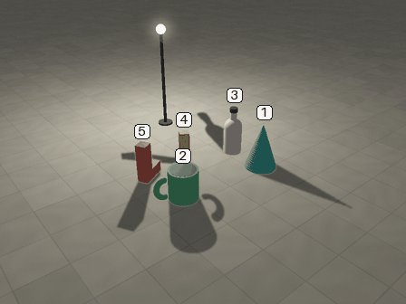
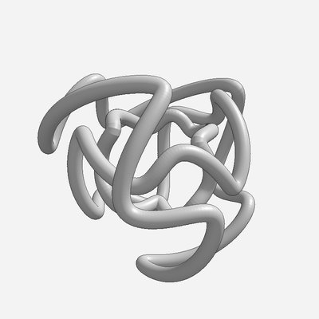
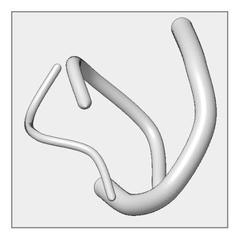
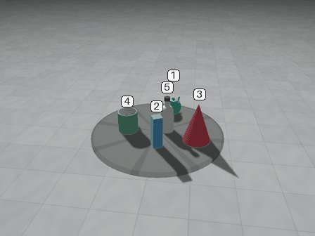
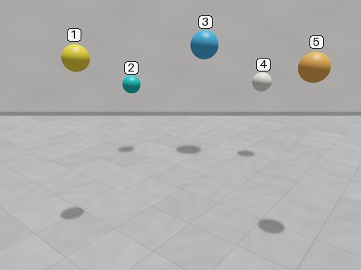
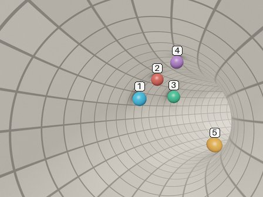
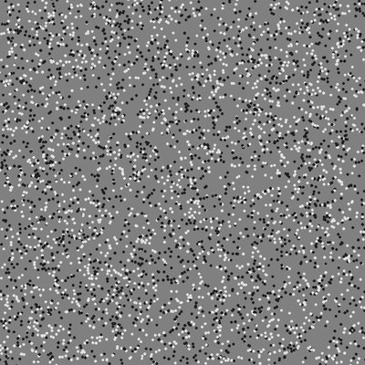
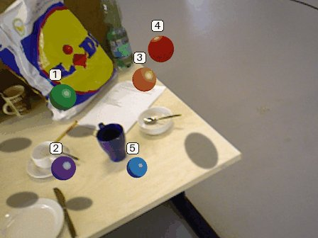

Orbit Shadows
Select every object whose shadow does not fit the lamp.
A camera swings round a table with numbered objects and a lamp. One to three shadows are wrong.
Our 13 pilot types, 6 example items each, played as a site would show them, with a timer. After a wrong answer the page marks the right one; at the end it shows a summary with Copy results (JSON). These are each type's example items, not the ones the models are asked.

A camera swings round a table with numbered objects and a lamp. One to three shadows are wrong.

Grey tubes that cross in every view; the camera swings round them.

One front view of tubes in a box, 4 candidate views: the wrong ones show the mirrored box or two tubes with traded thickness. No motion.

Two hidden lights, each object lit by one. One frame shows two groups of shadows that both look right; only the motion tells which light moves. A: The camera swings round the table; one hidden light stays in the room, the other travels with the camera. B: The camera stands still and a turntable swings; one hidden light stays in the room, the other turns with the table. C: As B, but the room light moves too, the other way round, so no shadow keeps its direction on the screen. D: The camera swings as in A; one hidden light stays in the room, the other drifts through it, with the camera or against it, so every shadow turns on the screen.


Five balls rest anywhere round the inside of a bent tiled tube, so height in the picture and size say nothing; only the tiles where a ball rests say how far it is.

Five shapes made only of dots slide over each other; every single frame is plain dots. Only the motion shows the shapes and which covers which.

Motion Shadows D along a real camera path, inserted into a real scene (TUM RGB-D).